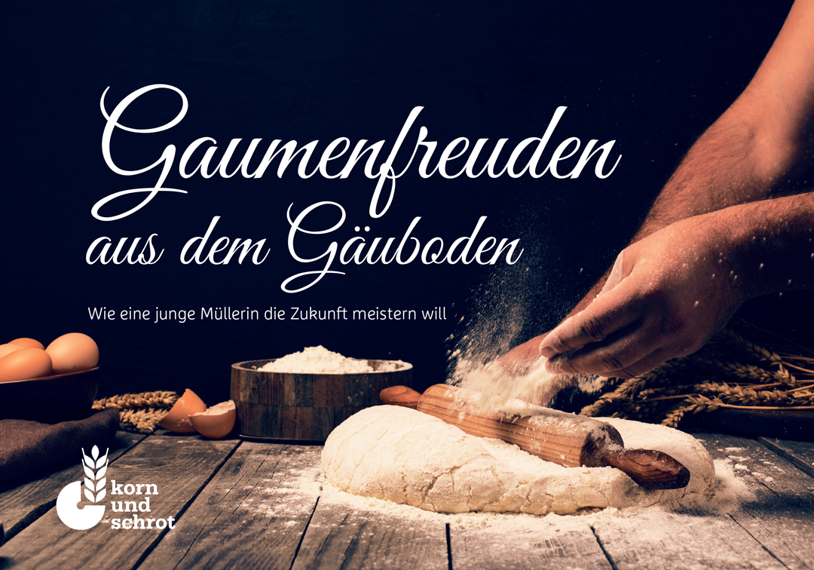
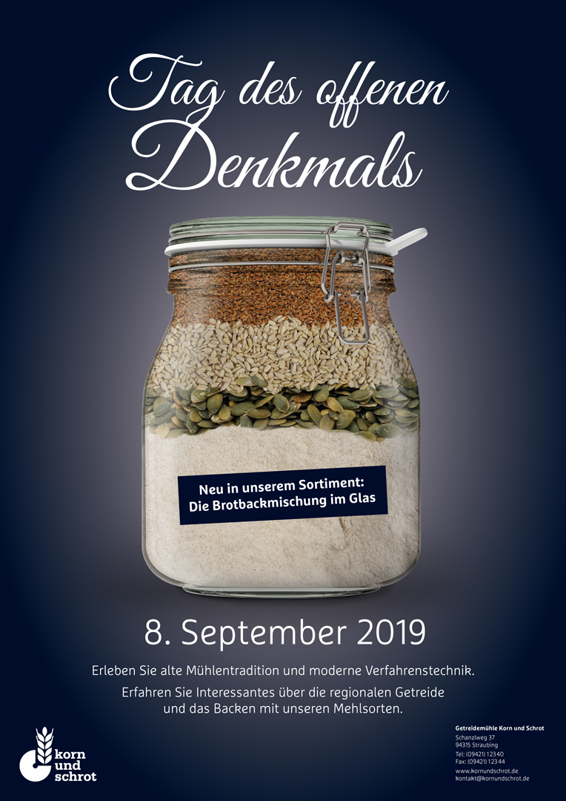
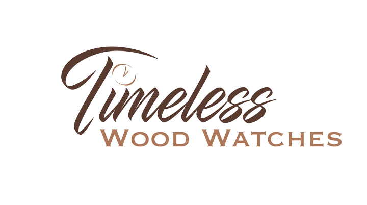
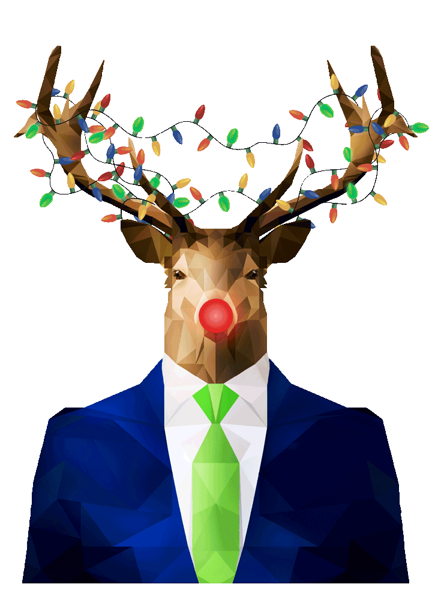

Portfolio
Alle 2 Wochen gestalte ich ein paar Seiten der Zeitung am Samstag
Dabei bin ich sowohl für Satz und Layout zuständig, wie auch für Bildbearbeitung sowie Bildmontage.
Hier die aktuelle Ausgabe:
Hier das Deckblatt für die Broschüre, die ich im Rahmen meiner Abschlussprüfung als Mediengestalter erstellt
habe:
Mit einem Klick aufs Bild gelangt ihr zum kompletten PDF-Dokument.

Ein weiterer Bestandteil war das Füllen eines Weckglasses mit den Zutaten einer Backmischung, die visuell im
richtigen Verhältnis zueinander dargestellt werden sollten.
Diese Komposition sollte dann für ein Plakat verwendet werden, um für den Tag des offenen Denkmals zu
werben.

Im Rahmen meines Berufsschulunterrichts gab es auch Projekte mit viel kreativem Freiraum, die sehr viel Spaß
gemacht haben, wie hier der Dreh einer Produktwerbung:
Dies ist ein Logo, was ich für einen Webshop gestaltet habe, der edle Holzuhren verkauft:

Leider befindet sich mein Macbook (und damit auch sehr viele Daten) auf der Intensivstation, weshalb ich hier nur
einen ganz kleinen Einblick in meine grafischen Tätigkeiten bieten kann.
Sehr gerne hätte ich auch noch auf meinen Guide zur Mülltrennung aufmerksam gemacht, der erklärt, was mit dem
jeweiligen Müll passiert nachdem er abgeholt wurde, und inwiefern und in welchem Umfang Recycling betrieben
wird.
Hole ich ASAP nach ;) Hier bereits als kleiner Teaser der Abschnitt des Restmülls. (Für volle Funktionalität muss das
Dokument eventuell heruntergeladen werden. Beim Hovern über einzelne Bildelemente sollte ein erklärender Text
erscheinen.)
(Für volle Funktionalität muss das
Dokument eventuell heruntergeladen werden. Beim Hovern über einzelne Bildelemente sollte ein erklärender Text
erscheinen.)
Wer das IBC kennt, kennt vielleicht auch bereits dessen Maskottchen, den Hirsch. Nur die wenigsten wissen, dass er
zur Weihnachtszeit fleißig unterwegs ist, um seinen alten Freund Rudolph zu unterstützen. Passend dazu habe ich
folgendes Gif entwickelt:
